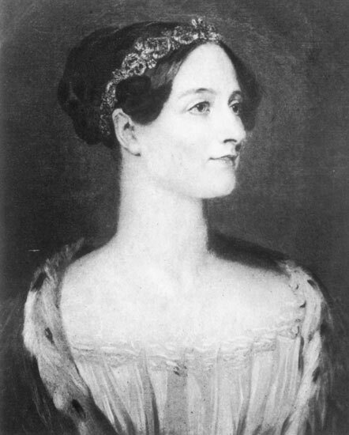

Ada Lovelace fue una matemática británica del siglo XIX, reconocida por su trabajo junto a Charles Babbage en la máquina analítica y por ser considerada la primera programadora de la historia.

"La máquina analítica no tiene pretensión de originar nada."
Ada Lovelace escribió lo que hoy se considera el primer algoritmo destinado a ser procesado por una máquina, décadas antes de que existieran las computadoras modernas. Su trabajo sentó las bases conceptuales de la programación tal como la conocemos.
Más información en Wikipedia - Ada Lovelace.